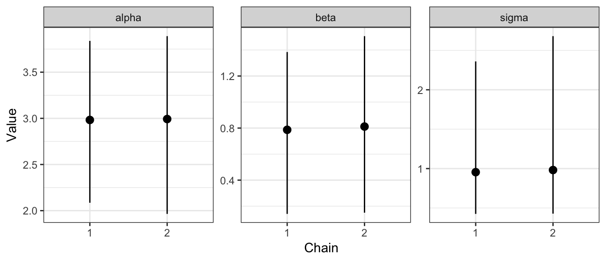

## Loading required package: broomLicense: MIT
mmcc provides custom functions written in data.table for tidying up mcmc.list objects.
At this stage there are just two functions, mcmc_to_dt and tidy.mcmc.list - called with tidy.
mcmc_to_dt takes an mcmc.list object and turns it into a data.table of the format:
library(coda)
data(line)
head(data.frame(line$line1))
#> alpha beta sigma
#> 1 7.17313 -1.566200 11.233100
#> 2 2.95253 1.503370 4.886490
#> 3 3.66989 0.628157 1.397340
#> 4 3.31522 1.182720 0.662879
#> 5 3.70544 0.490437 1.362130
#> 6 3.57910 0.206970 1.043500
library(mmcc)
mcmc_to_dt(line)
#> iteration chain parameter value
#> 1: 1 1 alpha 7.173130
#> 2: 2 1 alpha 2.952530
#> 3: 3 1 alpha 3.669890
#> 4: 4 1 alpha 3.315220
#> 5: 5 1 alpha 3.705440
#> ---
#> 1196: 196 2 sigma 1.306930
#> 1197: 197 2 sigma 0.846828
#> 1198: 198 2 sigma 0.465129
#> 1199: 199 2 sigma 0.672417
#> 1200: 200 2 sigma 0.639787tidy.mcmc.list takes an mcmc.list, turns it into a data.table and summarises it in terms of each parameter’s mean, median, standard deviation and credible interval with level given by conf.level:
tidy(line)
#> parameter mean sd 2.5% median 97.5%
#> 1: alpha 2.9875644 0.4983950 1.9650403 3.0188300 3.876589
#> 2: beta 0.7991864 0.3366834 0.1430713 0.7962500 1.469723
#> 3: sigma 0.9680519 0.7413014 0.4249618 0.7911975 2.559520We can also optionally ask for a subset of the parameters with a vector of colnames and summarise for each chain:
tidy(line,
chain = TRUE,
colnames=c("alpha"))
#> parameter chain mean sd 2.5% median 97.5%
#> 1: alpha 1 2.982615 0.5313900 2.085719 2.973115 3.838839
#> 2: alpha 2 2.992514 0.4643476 1.965040 3.063630 3.890256This may be useful if we want to make a plot that shows how a given parameter varies from chain to chain.
library(ggplot2)
line_tidy <- tidy(line, chain = TRUE)
ggplot(data = line_tidy,
aes(x = factor(chain),
y = mean)) +
geom_pointrange(aes(ymin = `2.5%`,
ymax = `97.5%`)) +
facet_wrap(~parameter,
nrow = 1,
scales = "free_y") +
theme_bw() +
xlab("Chain") +
ylab("Value")
Installation
Install from github using:
# install.packages("devtools")
devtools::install_github("njtierney/mmcc")Why mmcc?
Full credit does to Sam Clifford for the name.
To quote Sam:
…it’s all about reshaping and manipulating mcmc chains…
…therefore, mmcc
Future work
- Create summaries for each parameter
- Perform diagnostic summaries for convergence
- provide a suite of plotting in plotly, for speed, and interactivity.
Code of Conduct
Please note that this project is released with a Contributor Code of Conduct. By participating in this project you agree to abide by its terms.